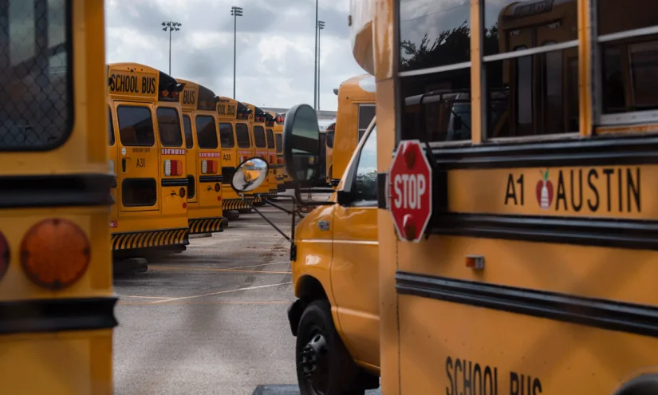

01
昆明带编教师招聘：编制为何仍是“香饽饽”？
昆明多所学校发布带编制教师招聘公告，引发关注。编制，在当下就业环境中意味着什么？对教师队伍又有什么影响？
图片来源：finance.sina.com.cn ·
查看原图最近，昆明一些学校发布了带事业编制的教师招聘信息。这则新闻本身信息有限，但“带编制”三个字足以成为焦点。在就业压力增大的背景下，编制意味着稳定的工作、可预期的退休保障，以及一定的社会地位。对于许多师范生和在职教师来说，编制是职业安全感的来源。然而，编制也带来了一些问题：部分地区编制名额有限，导致大量优秀教师无法入编，只能以“合同制”或“代课”身份工作，同工不同酬；而一些偏远地区学校即使有编制，也因地理位置、发展空间等原因难以招到人。这次昆明招聘的火爆，很可能也反映了这种供需矛盾。从更宏观的视角看，教师编制制度是中国教育体系的重要支柱，它保障了教师队伍的基本稳定，但也带来了僵化的问题。比如，编制往往与学校绑定，教师难以流动；一些学校编制过剩，另一些学校却严重缺编。近年来，国家推行“县管校聘”改革，试图打破编制壁垒，但进展缓慢。对于求职者来说，编制固然重要，但不应成为唯一标准。一个学校的文化、专业发展机会、学生群体、地域生活成本，同样影响职业幸福感。对于政策制定者，需要思考如何让编制更灵活地流向真正缺人的地区和学科，同时提高非编制教师的待遇和职业发展通道。
伊恩的观察
如果你正在考虑教师职业，不要只看编制。要综合考量学校文化、专业发展机会、地域生活成本。编制是保障，但不是全部。对于政策制定者，需要思考如何让编制更灵活地流向真正缺人的地区和学科。
02
计划招400人，报名615人：教师招聘热背后的冷思考
某地教师招聘计划招400人，却吸引了615人报名。数字背后，是教师职业的吸引力，还是就业市场的无奈？
图片来源：finance.sina.com.cn ·
查看原图另一则新闻提到，某地计划招聘教师相关数量人，报名人数达到相关数量人，竞争比例约为1.具体比分。这个比例看似不高，但考虑到教师招聘通常有专业、教师资格证等门槛，这个报名热度已经相当可观。背后的原因可能包括：经济下行期，教师职业的稳定性凸显；部分地区教师待遇有所提升；以及就业市场整体竞争加剧。但我们也需要警惕：报名人数多，不代表教育质量会自然提升。如果招聘过程重形式轻能力，或者新教师入职后缺乏支持，高报名率反而可能掩盖深层次问题。比如，有些学校招聘时只看学历和笔试成绩，忽视教学实践能力和教育热情；新教师入职后，如果缺乏系统的培训和 mentorship，很容易在头几年感到挫败甚至离职。此外，教师招聘热也可能导致“过度筛选”，一些有潜力但非名校毕业的应聘者被挡在门外。对于应聘者来说，报名只是第一步。要真正了解学校的教学理念、学生情况、同事氛围，可以通过实习、访谈、参观等方式。对于学校，招聘不是终点，如何留住人、培养人才才是关键。建立良好的新教师支持体系、提供持续的 professional development、营造合作而非竞争的文化，比单纯提高招聘门槛更重要。
伊恩的观察
对于应聘者，报名只是第一步。要真正了解学校的教学理念、学生情况、同事氛围。对于学校，招聘不是终点，如何留住人、培养人才是关键。
03
四川家庭教育立法：为困境儿童“兜底”，为所有家庭“立规”
《四川省家庭教育促进条例（草案）》提请三审，旨在通过立法明确家庭教育的责任，特别是为困境儿童提供支持。
四川省正在推进家庭教育立法，草案已进入三审阶段。这部法规的核心是为家庭教育提供法律框架，明确父母或其他监护人的主体责任，同时要求政府、学校、社会提供支持。特别值得关注的是，草案强调为困境儿童“兜底”——比如留守儿童、流动儿童、残疾儿童等，这些孩子往往因家庭功能缺失而面临更大风险。法律不是要惩罚家长，而是要建立一套机制：当家庭无力承担教育责任时，社会如何介入、如何补位。这其实是对“教育公平”最底线的保障。从具体内容看，草案可能包括：建立家庭教育指导服务体系，要求学校开设家长学校或家庭教育课程，对困境家庭提供经济援助或专业指导，以及明确相关部门职责。这部法律的出台背景是，近年来中国家庭教育问题频发，从“鸡娃”焦虑到留守儿童心理问题，都反映出家庭教育的缺失或偏差。立法试图从制度层面提供支持，但执行是关键。比如，如何确保指导服务的质量？如何避免形式主义？如何保护家庭隐私？对于家长来说，这部法律提醒我们：家庭教育不是私事，而是法律规定的责任。但也不必焦虑，法律更强调支持而非惩罚。可以主动了解社区、学校提供的家庭教育指导服务。如果你身边有困境儿童，也可以关注如何通过合法渠道提供帮助。
伊恩的观察
如果你为人父母，这部法律提醒你：家庭教育不是私事，而是法律规定的责任。但也不必焦虑，法律更强调支持而非惩罚。可以主动了解社区、学校提供的家庭教育指导服务。如果你身边有困境儿童，也可以关注如何通过合法渠道提供帮助。
04
美国加州阿拉米达县：一个县如何自建托育体系？
2020年，加州阿拉米达县选民通过了一项增税措施，自筹资金建设早期儿童托育体系。四年后，这个系统怎么样了？
美国加州阿拉米达县的故事，是一个自下而上的教育公平实验。2020年，该县选民通过Measure C，即“儿童健康与托育倡议”，批准征收半美分的销售税，预计每年产生约1.5亿美元用于早期儿童教育和托育。这笔钱由社区主导的委员会分配，用于扩大托育名额、提高托育工作者薪资、支持家庭式托育等。这个模式的亮点在于：它不依赖州或联邦拨款，而是本地居民自己决定为下一代投资。当然，它也面临挑战：销售税是累退税，对低收入家庭负担更重；而且托育体系建设需要长期投入，选举周期可能影响政策连续性。具体来说，Measure C的资金用途包括：增加托育补贴名额，使更多低收入家庭能够负担；提高托育工作者的工资，以解决行业人员流失问题；支持家庭式托育（即小型、家庭内的托育服务），因为这类服务往往更灵活、更贴近社区；以及投资于托育设施建设和质量改进。四年过去了，这个系统取得了一些成效：托育名额有所增加，部分工作者薪资得到提升。但也存在争议：一些居民认为销售税加重了生活负担，而托育服务的覆盖面仍然有限。此外，资金分配过程中，社区主导的委员会如何平衡各方利益，也是一个持续挑战。这个案例给我们的启示是：教育公平可以始于本地行动。如果你关心托育问题，可以参与社区讨论、支持类似的地方倡议。对于政策制定者，阿拉米达县的经验表明，专项税可以成为稳定资金来源，但需要配套的公平性设计，比如对低收入家庭的税收减免。
伊恩的观察
这个案例给我们的启示是：教育公平可以始于本地行动。如果你关心托育问题，可以参与社区讨论、支持类似的地方倡议。对于政策制定者，阿拉米达县的经验表明，专项税可以成为稳定资金来源，但需要配套的公平性设计。
05
德州“罗宾汉”学校经费系统：劫富济贫还是杀鸡取卵？
德克萨斯州的“罗宾汉”学校经费系统再次被起诉。这个系统从富裕学区收钱补贴贫困学区，但为何引发如此大的争议？

德州的“罗宾汉”系统，正式名称是“追回”（recapture）机制。它要求财产税收入较高的学区将部分资金上缴州政府，再重新分配给财产税收入较低的学区。这听起来很公平，但实际操作中问题重重。首先，富裕学区认为这是“惩罚成功”，打击了本地居民支持教育的积极性。其次，州政府并未完全补足贫困学区的资金缺口，导致许多学区即使收到补贴，仍面临预算紧张，不得不关闭学校、削减项目。最新的诉讼来自米德兰学区，他们质疑系统的合宪性。德州法院此前三次判决系统合宪，但学区的不满仍在累积。具体来说，米德兰学区是一个相对富裕的学区，因为当地有石油产业，财产税收入较高。根据“罗宾汉”系统，他们每年需要上缴数亿美元给州政府。学区认为，这些钱本应用于本地学生，却被拿去补贴其他学区，而州政府并没有确保那些学区真正改善教育质量。另一方面，贫困学区则认为，如果没有“罗宾汉”系统，他们根本无法维持基本运营。这种矛盾在德州由来已久。2019年，德州曾通过立法增加学校经费，但许多学区仍然面临财政困难。根本问题在于，德州依赖财产税作为学校主要经费来源，而财产税收入不均导致学区之间差距巨大。“罗宾汉”系统试图缩小差距，但再分配机制本身并不创造新资金，只是重新分配现有资源。如果州政府不增加总体教育投入，这个系统只会加剧零和博弈。对于家长来说，可以关注本地学区的预算听证会，了解经费去向。对于政策制定者，需要思考如何增加州级教育投入，减少对财产税的依赖，同时确保再分配机制透明、高效。
伊恩的观察
这个案例告诉我们，教育经费公平没有简单答案。如果你在富裕学区，可能觉得被“劫富”；如果你在贫困学区，可能觉得补贴不够。关键在于，任何再分配机制都需要透明、充足，并且与教育质量挂钩。对于家长，可以关注本地学区的预算听证会，了解经费去向。
无障碍文字记录
伊恩 你好，欢迎来到伊恩每日·教育。今天是2026年7月28日。今天的几个故事，看似分散，但都指向同一个核心问题：教育公平。从教师编制到家庭教育，从早期儿童照护到学校资金分配，我们面对的挑战是如何让每个孩子，无论出生在哪里、家庭条件如何，都能获得有质量的教育。我们来拆解一下。
伊恩 今天，昆明发布了一批带编制的教师招聘信息。编制，意味着稳定的工作和职业保障，对求职者来说，这无疑是个好消息。但另一条新闻显示，某校计划招聘400人，却已有615人报名，竞争比接近1.5:1。教师岗位依然热门，尤其是带编制的岗位。但热门背后，是结构性矛盾：优质岗位稀缺，而报考者众多。
编制之所以吸引人，是因为它提供了职业安全感、完善的福利和退休保障。在就业市场波动较大的当下，编制岗位成为许多人的首选。然而，这种热度也反映出教育领域的不平衡：城市优质学校岗位竞争激烈，而偏远地区或民办学校却常面临师资短缺。
对于求职者，需要理性评估自己的竞争力。如果执着于编制，可能需要接受更激烈的竞争和更长的等待期。同时，也可以考虑非编制岗位或民办学校的机会，这些岗位同样能积累教学经验，且部分民办学校薪资待遇并不低。
对学校和教育部门而言，如何在有限的编制内吸引和留住优秀教师，是长期课题。提升非编制岗位的吸引力，比如改善薪酬、提供职业发展通道，或许能缓解供需矛盾。
总之，编制是保障，但不是唯一路径。教育行业需要更多元的人才，而求职者也需要更开阔的视野。
伊恩 今天我们来聊聊《四川省家庭教育促进条例（草案）》提请三审的消息。这部地方性法规的核心是“为困境儿童兜底，为家庭教育立规”。
先看事实：7月27日，四川省人大常委会对《条例（草案）》进行第三次审议。草案旨在通过立法明确家庭、学校、社会、政府在家庭教育中的责任，特别强调对困境儿童的保障。
这意味着什么？长期以来，家庭教育被视为“私事”，家长怎么做外人无权干涉。但现实中，很多家庭缺乏科学育儿知识，尤其是困境家庭——比如留守儿童、低保家庭、残障儿童家庭——往往无力提供足够的支持。条例的出台，意味着政府要主动介入，为这些孩子“兜底”。
具体机制上，条例可能要求建立家庭教育指导服务体系，比如社区开设家长学校、学校配备家庭教育指导老师、对困境家庭提供一对一帮扶。同时，对不履行监护责任的家长，可能采取训诫、责令接受指导等措施。
但立法只是第一步。真正的挑战在落地：谁来提供专业指导？经费从哪来？如何避免形式化？比如，如果只是挂个牌、发个手册，效果会大打折扣。
对普通家长来说，这是一个信号：家庭教育不再是“凭感觉”的事，而是需要学习、需要支持。未来，你可能在社区、学校就能获得免费的家庭教育课程，这其实是好事——育儿焦虑往往源于孤立无援。
我的判断是：这部条例的方向是对的，但需要警惕“立法多、执行少”的老问题。对困境儿童，不能只有原则性条款，必须有可量化的指标和问责机制。对家长，别把法规当成束缚，而应看作资源——主动去了解你能获得哪些帮助。
教育公平，往往从家庭开始。当每个孩子都能得到科学的早期陪伴，社会的起跑线才能真正拉平。
听众 伊恩，教师编制这么抢手，是不是说明教师职业越来越好了？那非师范生还有机会吗？
伊恩 好问题。教师编制抢手，一方面说明职业稳定性受认可，另一方面也反映就业压力。但“好”是相对的。编制岗位竞争激烈，对非师范生来说，门槛可能更高，但并非无路。很多地区允许非师范生报考，只要专业对口、有教师资格证。关键是提升教学能力和面试表现。另外，民办学校、教育科技公司等也需要优秀人才。不要把目光只盯在编制上。
伊恩 今天看到一条新闻，某校计划招聘400名教师，但报名人数已经达到615人。这个数字很直观：教师岗位的供需矛盾依然突出。
先看事实：招聘400人，报名615人，报录比约为1.5:1。这其实不算特别夸张——在一些热门城市或名校，报录比达到10:1甚至更高都很常见。但关键在于，这615人里，有多少是真正符合岗位要求的？有多少是抱着“先报上再说”的心态？
对于学校来说，报名人数多意味着选拔空间更大，可以优中选优。但也要警惕过度竞争导致的人才流失——有些优秀的求职者可能会因为竞争激烈而转向其他行业，或者选择去待遇更好的私立学校。
对于求职者，尤其是应届毕业生，这种竞争压力确实让人焦虑。但我想提醒你：不要只盯着这一个岗位。教师招聘的渠道其实很多，比如特岗教师、三支一扶、西部计划等基层项目，这些项目同样能积累教学经验，而且在服务期满后，考编往往有加分或定向招录的优势。
另外，也要理性看待“编制”本身。编制意味着稳定，但也可能意味着较低的薪酬和有限的晋升空间。如果你更看重职业成长和收入，私立学校或教育科技公司或许更适合你。
长期来看，教师岗位的竞争不会很快缓解。但与其焦虑，不如提前规划：提升自己的教学能力、考取相关证书、积累实习经验。同时，保持开放心态，不要把鸡蛋放在一个篮子里。
最后，我想对正在求职的你 say：竞争激烈不代表你没有机会。找准自己的定位，多渠道尝试，你一定能找到适合自己的位置。
听众 伊恩，家庭教育立法了，会不会让家长更焦虑？感觉养娃越来越难了。
伊恩 理解你的焦虑。但立法不是给家长加码，而是提供支持。比如，条例要求政府提供家庭教育指导服务，帮助家长科学育儿。真正的难点在于执行：服务是否到位、资源是否充足。作为家长，可以主动关注社区或学校提供的免费讲座、咨询，把法律视为工具而非负担。记住，没有完美的家长，只有不断学习的家长。
伊恩 今天我们来聊一个国际案例：美国加州阿拉米达县正在从零建设一个儿童保育系统。2020年，该县选民通过了一项名为Measure C的提案，即“儿童健康与保育倡议”，通过增收半美分销售税，预计每年筹集1.5亿美元，专门用于早期儿童照护和教育。这是一个社区主导、选民批准的创新模式。它的核心是把儿童照护视为公共基础设施，而不是家庭私事。
这个系统的运作机制是：由社区组织、家长、保育提供者、劳工领袖和商业团体共同设计，资金由专项税收保障，用于扩大托育名额、提高保育员薪酬、降低家庭费用，并建立质量监管体系。目前，该县已开始用这笔资金建设新的托育中心、培训师资，并为低收入家庭提供补贴。
代价是什么？对消费者而言，半美分销售税意味着每100美元消费多付50美分，但换来的是更可负担、更高质量的托育服务。对政策制定者来说，这是一个可借鉴的案例：通过税收专项支持，实现系统性的改变。
这个案例对普通人的影响是直接的——家庭不再独自承担高昂的托育成本，孩子能获得更专业的早期教育。但也要看到，这种模式依赖地方税收，富裕县更容易实施，而贫困地区可能难以复制。长期来看，它挑战了“育儿是私事”的观念，推动社会共同承担下一代成长的责任。
我的判断是：阿拉米达县的实验为全球提供了宝贵经验，但公平性问题仍需警惕。如果只靠地方税收，可能加剧区域不平等。未来需要更高层面的财政转移支付，才能让每个孩子都享有公平的起点。
伊恩 今天我们来聊聊美国德克萨斯州一个备受争议的学校资助系统——“罗宾汉”系统。这个名字听起来有点童话色彩，但背后是真实的财政博弈。简单来说，这个系统要求富裕学区将一部分财产税收入上缴给州政府，再由州政府重新分配给贫困学区，目的是缩小不同地区之间的教育经费差距。听起来很公平，对吧？但现实远比想象复杂。
就在本周，德州的米德兰学区正式起诉了州教育专员迈克·莫拉斯，指控这个“罗宾汉”系统违宪。米德兰学区位于西德州，本身不算特别富裕，但也不是最穷的。他们认为，州政府从他们那里拿走的钱太多，导致本地学校不得不削减课程、关闭项目甚至裁员。而事实上，德州法院在过去已经三次判决这个系统合宪——分别在1995年、2005年和2016年。但为什么争议依然不断？
要理解这个问题，我们需要先看清“罗宾汉”系统的运作机制。德州不征收州级个人所得税或企业所得税，公立学校的主要经费来源是地方财产税。由于各学区的房产价值差异巨大，富裕学区自然能筹集更多资金。为了保障教育公平，州政府设定了一个“底线”——每个学生必须获得一定数额的经费。如果某个学区的人均财产税收入超过这个底线，超出部分就要上缴给州政府，用于补贴那些低于底线的贫困学区。这就是“收回”或“罗宾汉”的由来。
支持者认为，这是实现教育公平的必要手段。毕竟，一个孩子的教育质量不应该取决于他住在哪个社区。贫困学区往往面临更多挑战，比如学生家庭收入低、英语非母语比例高、特殊需求学生多，这些都需要额外资源。如果没有“罗宾汉”，富裕和贫困学区的差距只会越来越大。
但反对者也有他们的理由。首先，这个系统实际上是在惩罚那些努力发展本地经济、提高房产价值的学区。你越努力，被拿走的就越多。其次，上缴的资金并没有全部回到教育中——州政府有时会挪作他用。更关键的是，这个系统并没有解决根本问题：州政府对公立教育的整体投入不足。尽管去年德州议会批准了新的教育拨款，但许多学区仍然面临财政危机，不得不关闭学校、削减项目。米德兰学区的诉讼就是这种长期挫败感的爆发。
那么，这个争议对普通学生和家长意味着什么？最直接的影响就是不确定性。当学区陷入法律纠纷，或者财政紧张时，最先受到冲击的就是课程设置、师资力量和校园设施。你可能突然发现，孩子喜欢的音乐课被取消了，班级规模变大了，或者学校不再提供课后辅导。对于贫困学区的孩子来说，他们本已有限的资源可能进一步缩水；而对于富裕学区的家庭，他们可能会质疑为什么自己交的税不能完全用在自己孩子的学校上。
从更宏观的角度看，这个案例揭示了一个全球性的教育难题：如何在地方自主和州级公平之间找到平衡？完全的地方自治会导致富者愈富、穷者愈穷；而完全的州级统筹又可能扼杀地方的积极性和创新。德州的做法是一种折中，但显然并不完美。
我认为，真正的出路不在于争论“该不该收回”，而在于增加教育总投入，并建立更透明、更高效的分配机制。同时，家长和学生需要意识到，教育公平不是一个抽象的概念，它直接关系到每个孩子能获得什么样的学习机会。与其被动等待政策改变，不如积极参与到学区事务中，了解经费去向，表达自己的诉求。毕竟，教育是所有人的事。
听众 伊恩，加州那个儿童保育模式，国内能复制吗？感觉我们托育资源还是不够。
伊恩 好问题。加州模式的核心是地方自主加专项税收，这需要较高的社区共识和制度基础。国内目前更多是政府主导的普惠托育试点，比如上海、杭州等地。完全复制有难度，但可以借鉴其思路：将儿童照护视为公共品，通过多元渠道筹资。对于家长，可以关注本地普惠托育政策，利用社区资源。对于从业者，这是一个值得关注的职业方向。
伊恩 我们来复盘一下。今天的五个故事，从教师编制到家庭教育立法，从招聘竞争到儿童保育，再到学校资助，都指向教育公平的不同维度。教师编制竞争反映的是优质教育资源的稀缺；家庭教育立法试图弥补家庭背景带来的差距；招聘数据暴露了供需矛盾；加州模式展示了社区如何通过税收自主解决托育问题；德州罗宾汉争议则暴露了资金分配中的公平与效率矛盾。没有一个简单的答案。但我们可以从中学到：公平需要制度设计，也需要每个人的参与。
伊恩 今天的内容就到这里。如果你对某个话题有更多疑问，欢迎留言。教育公平不是一天能实现的，但每一步都算数。我是伊恩，明天见。